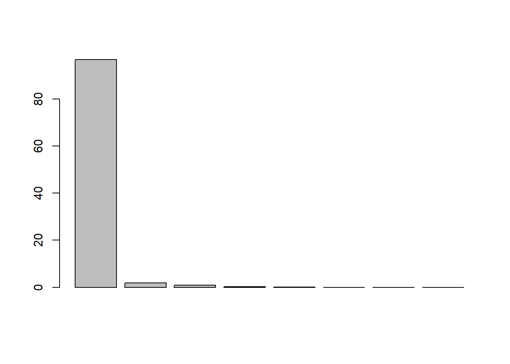

Last updated: 2019-04-01
Checks: 6 0
Knit directory: for-future-reference/
This reproducible R Markdown analysis was created with workflowr (version 1.2.0.9000). The Report tab describes the reproducibility checks that were applied when the results were created. The Past versions tab lists the development history.
Great! Since the R Markdown file has been committed to the Git repository, you know the exact version of the code that produced these results.
Great job! The global environment was empty. Objects defined in the global environment can affect the analysis in your R Markdown file in unknown ways. For reproduciblity it’s best to always run the code in an empty environment.
The command set.seed(20190125) was run prior to running the code in the R Markdown file. Setting a seed ensures that any results that rely on randomness, e.g. subsampling or permutations, are reproducible.
Great job! Recording the operating system, R version, and package versions is critical for reproducibility.
Nice! There were no cached chunks for this analysis, so you can be confident that you successfully produced the results during this run.
Great! You are using Git for version control. Tracking code development and connecting the code version to the results is critical for reproducibility. The version displayed above was the version of the Git repository at the time these results were generated.
Note that you need to be careful to ensure that all relevant files for the analysis have been committed to Git prior to generating the results (you can use wflow_publish or wflow_git_commit). workflowr only checks the R Markdown file, but you know if there are other scripts or data files that it depends on. Below is the status of the Git repository when the results were generated:
Ignored files:
Ignored: .Rhistory
Ignored: .Rproj.user/
Ignored: docs/figure/
Note that any generated files, e.g. HTML, png, CSS, etc., are not included in this status report because it is ok for generated content to have uncommitted changes.
These are the previous versions of the R Markdown and HTML files. If you’ve configured a remote Git repository (see ?wflow_git_remote), click on the hyperlinks in the table below to view them.
| File | Version | Author | Date | Message |
|---|---|---|---|---|
| Rmd | 4a3a317 | John Blischak | 2019-04-01 | Add PCA examples. |
| html | a35299b | John Blischak | 2019-03-31 | Build site. |
| Rmd | c2ae4e5 | John Blischak | 2019-03-31 | Notes from Linear Algebra for Data Science with R. |
Notes from the DataCamp course Linear Algebra for Data Science with R.
v <- c(10, 10)
v[1] 10 10Increase x-component:
A <- matrix(c(5, 0, 0, 1), nrow = 2, byrow = TRUE)
A [,1] [,2]
[1,] 5 0
[2,] 0 1A %*% v [,1]
[1,] 50
[2,] 10Decrease y-component:
A <- matrix(c(1, 0, 0, 1/5), nrow = 2, byrow = TRUE)
A [,1] [,2]
[1,] 1 0.0
[2,] 0 0.2A %*% v [,1]
[1,] 10
[2,] 2Reflect about the x-axis:
A <- matrix(c(1, 0, 0, -1), nrow = 2, byrow = TRUE)
A [,1] [,2]
[1,] 1 0
[2,] 0 -1A %*% v [,1]
[1,] 10
[2,] -10Reflect about the y-axis:
A <- matrix(c(-1, 0, 0, 1), nrow = 2, byrow = TRUE)
A [,1] [,2]
[1,] -1 0
[2,] 0 1A %*% v [,1]
[1,] -10
[2,] 10Identity matrix:
diag(3) [,1] [,2] [,3]
[1,] 1 0 0
[2,] 0 1 0
[3,] 0 0 1Find the inverse with solve.
A <- matrix(c(0, 5, -2, 0), nrow = 2, byrow = TRUE)
A [,1] [,2]
[1,] 0 5
[2,] -2 0solve(A) [,1] [,2]
[1,] 0.0 -0.5
[2,] 0.2 0.0A %*% solve(A) [,1] [,2]
[1,] 1 0
[2,] 0 1solve(A) %*% A [,1] [,2]
[1,] 1 0
[2,] 0 1Compute the determinant:
A <- matrix(c(1, 0, 0, 2), nrow = 2, byrow = TRUE)
A [,1] [,2]
[1,] 1 0
[2,] 0 2det(A)[1] 2A <- matrix(c(1, 0, 2, 0), nrow = 2, byrow = TRUE)
A [,1] [,2]
[1,] 1 0
[2,] 2 0det(A)[1] 0Compute eigenvalues (\(\lambda\)) and eigenvectors (\(\textbf{x}\)):
\[ A\textbf{x} = \lambda\textbf{x}\]
A <- cbind(c(1,-1), c(-1,1))
(E <- eigen(A))eigen() decomposition
$values
[1] 2 0
$vectors
[,1] [,2]
[1,] -0.7071068 -0.7071068
[2,] 0.7071068 -0.7071068A %*% E$vectors[, 1] [,1]
[1,] -1.414214
[2,] 1.414214E$values[1] * E$vectors[, 1][1] -1.414214 1.414214A %*% E$vectors[, 2] [,1]
[1,] 0
[2,] 0E$values[2] * E$vectors[, 2][1] 0 0Principal Component Analysis
combine_url <- "https://assets.datacamp.com/production/repositories/2654/datasets/760dae913f682ba6b2758207280138662ddedc0d/DataCampCombine.csv"
combine <- read.csv(combine_url)
dim(combine)[1] 2885 13head(combine) player position school year height weight forty
1 Jaire Alexander CB Louisville 2018 71 192 4.38
2 Brian Allen C Michigan St. 2018 73 298 5.34
3 Mark Andrews TE Oklahoma 2018 77 256 4.67
4 Troy Apke S Penn St. 2018 74 198 4.34
5 Dorance Armstrong EDGE Kansas 2018 76 257 4.87
6 Ade Aruna DE Tulane 2018 78 262 4.60
vertical bench broad_jump three_cone shuttle
1 35.0 14 127 6.71 3.98
2 26.5 27 99 7.81 4.71
3 31.0 17 113 7.34 4.38
4 41.0 16 131 6.56 4.03
5 30.0 20 118 7.12 4.23
6 38.5 18 128 7.53 4.48
drafted
1 Green Bay Packers / 1st / 18th pick / 2018
2 Los Angeles Rams / 4th / 111th pick / 2018
3 Baltimore Ravens / 3rd / 86th pick / 2018
4
5
6 Minnesota Vikings / 6th / 218th pick / 2018x <- as.matrix(combine[, 5:12])
# Subtract the column means
(column_means <- apply(x, 2, mean)) height weight forty vertical bench broad_jump
73.992721 252.087348 4.811584 32.598267 21.091854 113.190295
three_cone shuttle
7.305719 4.408548 x <- sweep(x, 2, column_means)
apply(x, 2, mean) height weight forty vertical bench
-1.572879e-15 -9.502468e-15 3.977476e-16 -1.041735e-16 1.217401e-15
broad_jump three_cone shuttle
4.524137e-15 2.807089e-16 -2.469472e-17 # Calculate variance-covariance matrix
x_cov <- t(x) %*% x / (nrow(x) - 1)
dim(x_cov)[1] 8 8x_cov height weight forty vertical bench
height 7.1597944 90.788084 0.52676257 -5.065512 6.2780614
weight 90.7880840 2105.176834 13.04832553 -132.887401 188.5644427
forty 0.5267626 13.048326 0.10318906 -1.034265 0.9549273
vertical -5.0655119 -132.887401 -1.03426459 18.232972 -8.7243553
bench 6.2780614 188.564443 0.95492726 -8.724355 40.8989801
broad_jump -11.2472274 -330.417460 -2.55786742 33.083582 -24.1124924
three_cone 0.5955444 15.944407 0.11523591 -1.245058 1.2152061
shuttle 0.3912377 9.644035 0.06894544 -0.811669 0.6913887
broad_jump three_cone shuttle
height -11.247227 0.59554442 0.39123769
weight -330.417460 15.94440664 9.64403467
forty -2.557867 0.11523591 0.06894544
vertical 33.083582 -1.24505770 -0.81166895
bench -24.112492 1.21520610 0.69138865
broad_jump 90.079934 -3.11504850 -1.89762575
three_cone -3.115048 0.18612283 0.09866407
shuttle -1.897626 0.09866407 0.07283010# The diagonal entries are the variance of the original columns
diag(x_cov) height weight forty vertical bench
7.1597944 2105.1768336 0.1031891 18.2329720 40.8989801
broad_jump three_cone shuttle
90.0799335 0.1861228 0.0728301 apply(x, 2, var) height weight forty vertical bench
7.1597944 2105.1768336 0.1031891 18.2329720 40.8989801
broad_jump three_cone shuttle
90.0799335 0.1861228 0.0728301 # The non-diagonal entries are the covariance between the two columns
cov(x[, 1], x[, 5])[1] 6.278061x_cov[1, 5][1] 6.278061x_cov[5, 1][1] 6.278061# Calculate eigenvalues of covariance matrix
x_eig <- eigen(x_cov)
x_eigeigen() decomposition
$values
[1] 2.187628e+03 4.403246e+01 2.219205e+01 5.267129e+00 2.699702e+00
[6] 6.317016e-02 1.480866e-02 1.307283e-02
$vectors
[,1] [,2] [,3] [,4] [,5]
[1,] -0.042047079 -0.061885367 0.1454490039 -0.1040556410 0.980792060
[2,] -0.980711529 -0.130912788 0.1270100265 0.0193388930 -0.066908382
[3,] -0.006112061 0.012525260 0.0025260713 -0.0021291637 -0.004096693
[4,] 0.062926466 -0.333556369 0.0398922845 0.9366594549 0.074901137
[5,] -0.088291423 -0.313533433 -0.9363461471 -0.0745692157 0.107188391
[6,] 0.156742686 -0.876925849 0.2904565302 -0.3252903706 -0.126494599
[7,] -0.007468520 0.014691994 0.0009057581 0.0003320888 -0.020902644
[8,] -0.004518826 0.009863931 0.0023111814 -0.0094052914 -0.004010629
[,6] [,7] [,8]
[1,] -0.020679696 -6.155636e-03 0.0008055445
[2,] 0.008423587 6.988341e-04 0.0036087841
[3,] -0.152469227 -2.539868e-01 -0.9549983725
[4,] -0.012214516 7.045063e-03 -0.0070051256
[5,] -0.009167322 -8.604309e-05 -0.0048308793
[6,] -0.013753112 -2.187651e-03 -0.0076907609
[7,] -0.894560357 -3.743559e-01 0.2427137770
[8,] -0.419039274 8.917710e-01 -0.1700673446# Percentage of variance explained by each principal component
barplot(x_eig$values / sum(x_eig$values) * 100)
# Using prcomp (and also scaling the columns)
scaled <- scale(combine[5:12])
pca <- prcomp(scaled)
summary(pca)Importance of components:
PC1 PC2 PC3 PC4 PC5 PC6
Standard deviation 2.3679 0.9228 0.78904 0.61348 0.46811 0.37178
Proportion of Variance 0.7009 0.1064 0.07782 0.04704 0.02739 0.01728
Cumulative Proportion 0.7009 0.8073 0.88514 0.93218 0.95957 0.97685
PC7 PC8
Standard deviation 0.34834 0.25266
Proportion of Variance 0.01517 0.00798
Cumulative Proportion 0.99202 1.00000
sessionInfo()R version 3.5.3 (2019-03-11)
Platform: x86_64-w64-mingw32/x64 (64-bit)
Running under: Windows 10 x64 (build 17763)
Matrix products: default
locale:
[1] LC_COLLATE=English_United States.1252
[2] LC_CTYPE=English_United States.1252
[3] LC_MONETARY=English_United States.1252
[4] LC_NUMERIC=C
[5] LC_TIME=English_United States.1252
attached base packages:
[1] stats graphics grDevices utils datasets methods base
loaded via a namespace (and not attached):
[1] workflowr_1.2.0.9000 Rcpp_1.0.1 digest_0.6.18
[4] rprojroot_1.3-2 backports_1.1.3 git2r_0.25.2
[7] magrittr_1.5 evaluate_0.13 stringi_1.4.3
[10] fs_1.2.7 whisker_0.3-2 rmarkdown_1.12
[13] tools_3.5.3 stringr_1.4.0 glue_1.3.1
[16] xfun_0.5 yaml_2.2.0 compiler_3.5.3
[19] htmltools_0.3.6 knitr_1.22